Chapter 15 Visualizations
Visualizations have always been an important part of data science and chemistry. Good graphics illuminate trends and patterns you may have otherwise missed and allow us to quickly inspect thousands of values. R via the ggplot2 package is one of, if not the premier, data visualization language available. This chapter will formally introduce the ggplot2 package, explain a bit of the logic undergirding it’s operation, and give you some quick examples of how it works. Afterwards we’ll delve deeper into specific visualizations you’ll use and encounter in your studies culminating in preparing your plots for publication.
15.1 ggplot basics
ggplot2 is loaded by default with the tidyverse suite of packages. Let’s revisit our spectroscopy data we encountered in Tidying your data:
library(tidyverse)
atr_long <- read_csv("data/ATR_plastics.csv") %>%
pivot_longer(cols = -wavenumber,
names_to = "sample",
values_to = "absorbance") ## Rows: 7157 Columns: 5
## ── Column specification ─────────────────────────────────────────────────────────────────────────────────────────────────
## Delimiter: ","
## dbl (5): wavenumber, EPDM, Polystyrene, Polyethylene, Sample: Shopping bag
##
## ℹ Use `spec()` to retrieve the full column specification for this data.
## ℹ Specify the column types or set `show_col_types = FALSE` to quiet this message.15.1.1 Building plots ups
The gg in ggplot2 stands for the grammar of graphics,(H. Wickham 2009) and it’s a way to break down graphics (plots) into small pieces that can be discussed (hence grammar). We’ll take a look at this grammar via geoms (what kind of plot), aes (aesthetic choices), etc. For now, understand that this means we need to build up graphics/plots piece-by-piece and layer-by-layer. This extends beyond code to how we code. No sense in putting lipstick on a pig. Plot often, and discard the useless ones. Take the time to pretty up your plot after you’re satisfied with the underlying data.
15.1.2 Basic plotting
ggplot2 uses geoms to specify what type of plot to create. Different plots are used to tell different stories and have different strengths and weakness. We’ll explore these more in Visualizations for Env Chem, but for now we’ll focus on geom_point(), which simply plots data as points on an [x,y] coordinate. In other words, a scatter plot.
Let’s plot our tided atr_long data:
Let’s ignore the plot for now and look at our code down:
ggplot()initializes a ggplot object, basically an empty plot.- We then specified we want to plot data from our
atr_longdataset (data = atr_long). - We then specified our aesthetic mappings via
aes(). Here we’ll pass information for how we want the plot to look. - To our aesthetic mappings we’ve specified which values from
atr_longare supposed to be our x-axis values (x = wavenumber) and y-axis values (y = absorbance). - We then add the
geom_point()layer to create a scatter plot of [x,y] points .
Now let’s look at our result. What we see is a point for every recorded absorbance measurements from our ATR analysis. We can clearly see the spectra of the different plastics in our data, however they’re all coloured the same. This is because we’ve only specified the x and y values. As far as ggplot() is concerned, these are the only values that matter, but we know different.
Fortunately you can pass multiple variables to different aes() options to enhance our plot. For instance, we can pass the sample variable, which specifies which sample a spectrum originates from, to the colour option:
Now we have a legend which clearly specifies which points are associated with each sample. But now the points are too large, potentially masking certain peaks. We can adjust the size of each point as follows:
ggplot(data = atr_long,
aes(x = wavenumber,
y = absorbance,
colour = sample)) +
geom_point(size = 0.5)
We specified size = 0.5 in the geom_point() call because it’s a constant. We can map size to any continuous variable, such as the absorbance:
ggplot(data = atr_long,
aes(x = wavenumber,
y = absorbance,
colour = sample,
size = absorbance)) +
geom_point()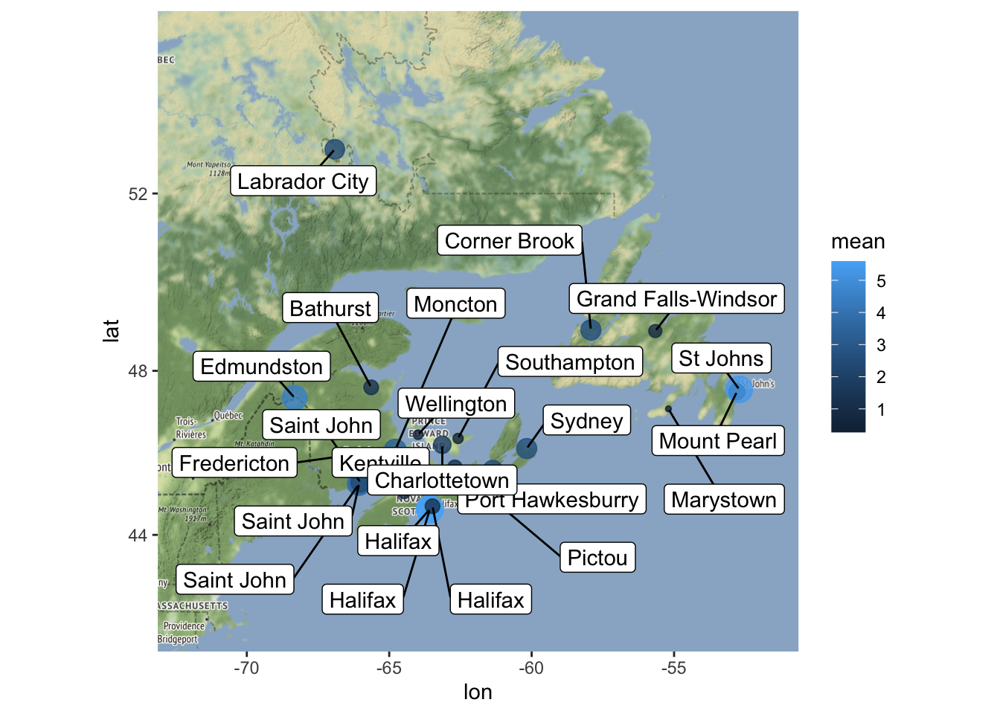
Sometimes this makes sense (i.e. a bubble chart) but for our example, having the size of the points increase as the absorbance increases doesn’t provide any new information (it actually clutters our plot).
15.1.3 Changing plot labels
By default ggplot uses the header of the columns you passed for the x and y aes() options. Because headers are written for code they’re often poor label titles for plots. We can specify new labels and plot titles as follows:
ggplot(data = atr_long,
aes(x = wavenumber,
y = absorbance,
colour = sample)) +
geom_point() +
labs(title = "ATR Spetra",
subtitle = "Courtesy of CHM317 student data",
x = "Wavenumber, cm^-1",
y = "Absorbance (arbitrary units)",
caption = "hi mom",
colour = "Plastic")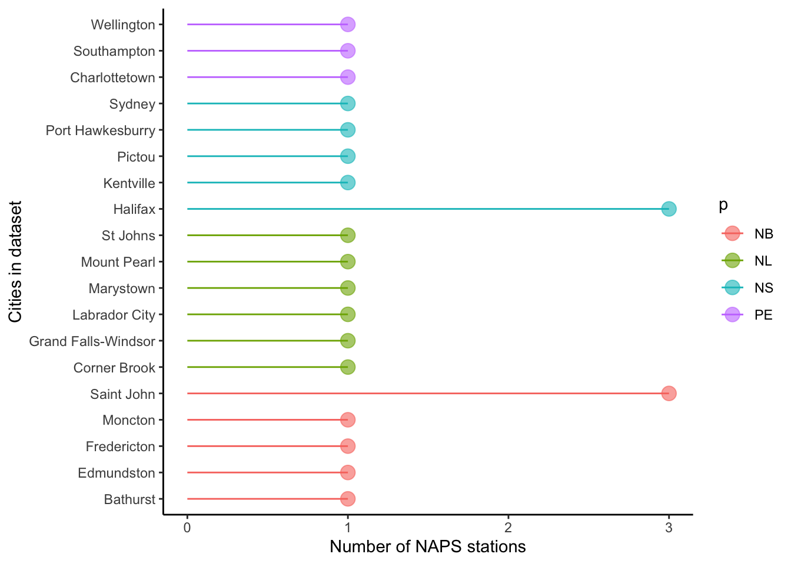
Note how we changed the title of the legend with colour = "Plastics". This is because the legend is generated from our colour aesthetic (aes(..., colour = sample)). If our legend was based off of the size aesthetic, we would use size = "New Title" to change the title for the size legend.
15.1.4 Small Multiples
Sometimes your plots become overwhelming, a phenomena called overplotting, which prevent your from comparing graphs or charts. A popular solution is small multiples, a series of smilar plots using the same scale and axes. This is readily accomplished in R using facet_grid() (which creates a 2-D grid ) or facet_wrap() (a single 1d ribbon wrapped into 2D space). You simply specy which variable you want to differentiate your plots, for us it’s sample:
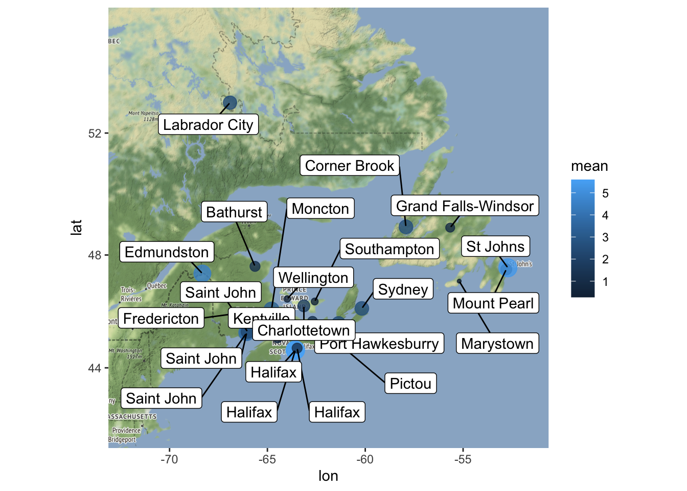
Note the use of the tilde (~) in facet_wrap(~sample); in this situation, it’s shorthand telling facet_wrap() to make small multiples off of the sample variable.
15.1.5 Plotting subsets of data
Often you won’t want to plot everything in your dataset. Rather, you’ll want to plot a specific chemical, city, location, etc. To that end you want to plot a subset of your data. There are a couple of ways to handle this.
You can subset your data on the fly using subset(). This way allows you to specify based off of Logical operators as such:
ggplot(data = subset(atr_long, sample == "EPDM"),
aes(x = wavenumber,
y = absorbance)) +
geom_point()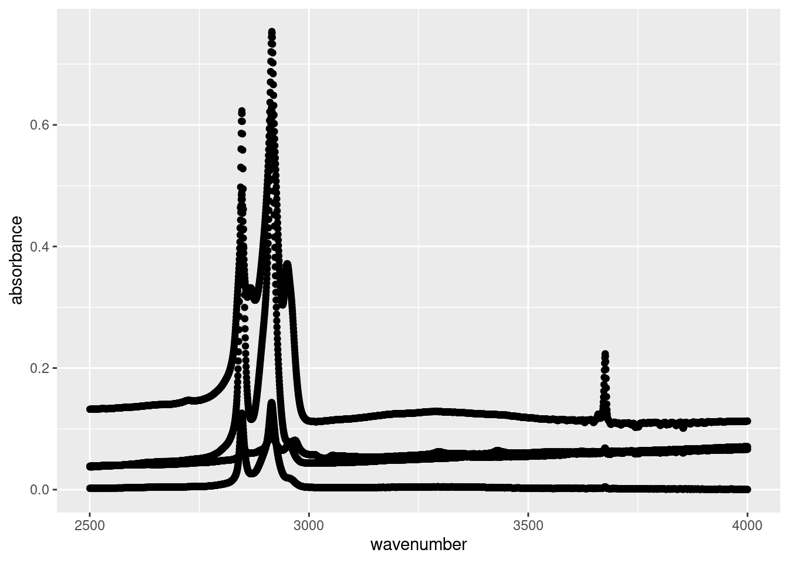
or
ggplot(data = subset(atr_long, wavenumber >=2500),
aes(x = wavenumber,
y = absorbance)) +
geom_point()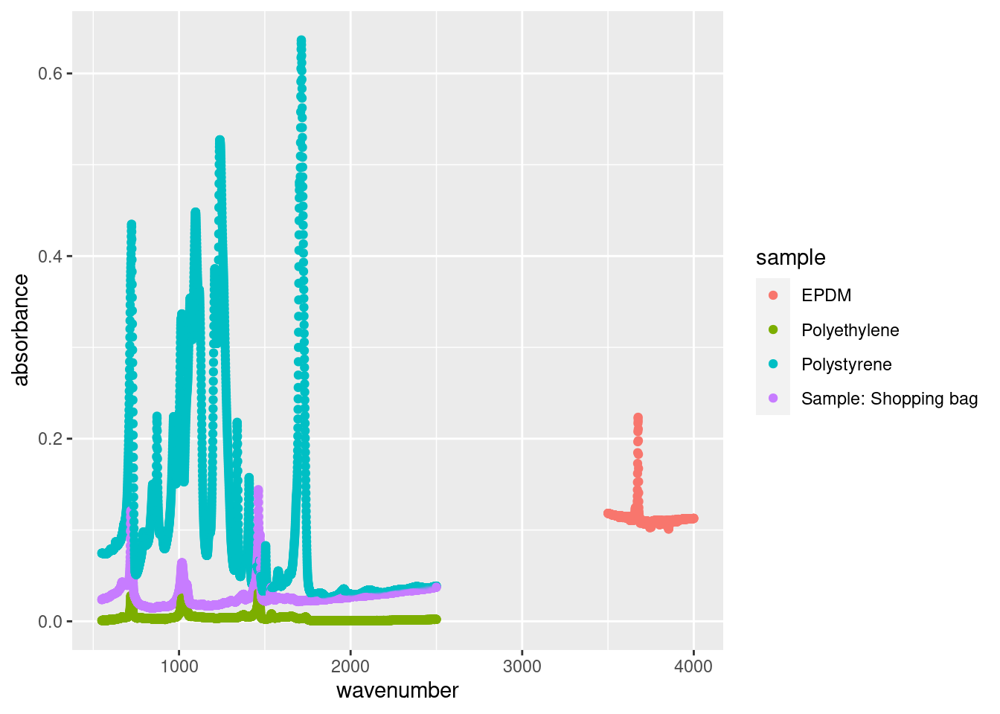
Another approach is to use filter() and pipe to ggplot():
atr_long %>%
filter(sample != "EPDM" & wavenumber <= 2500 |sample == "EPDM" & wavenumber >= 3500 ) %>%
ggplot(., aes(x = wavenumber, y = absorbance, colour = sample)) +
geom_point()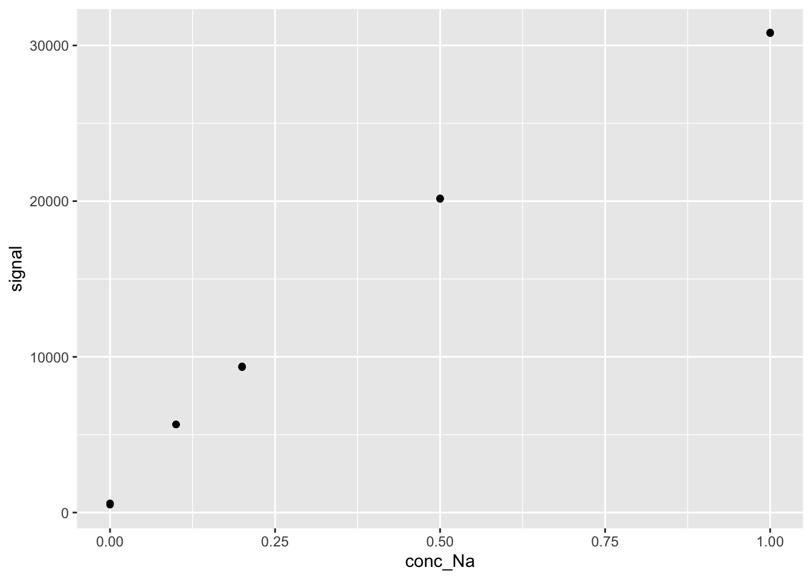
There are pros and cons to either approach. subset() on the fly is best for simple task, like plotting a single city, whereas the piping approach is best for more complex sorting.
15.2 Visualizations for Env Chem
We’ve already encountered and produced several types of plots to visualize our data. We’ve also gone over the theory and basic operations of ggplot() in the ggplot basics section. Now, we’ll expand on these and explicitly walk through the most common data visualization methods you’ll encounter in the field of environmental chemistry. Additionally, we’ll learn how to get your plots ready for publication.
The plots we’ll be covering include:
These are only a smattering of the possible data visualizations you can perform in R. We’re focusing on them because of their ubiquity in our field, but they often won’t be the ideal visualizations you need to communicate your story. We highly recommend you check out the following resources. Not only are they a great source of inspiration, they provide example code to get you up and running. We consult them regularly.
- Data to viz which features a decision tree to help you decide on what plot would serve you best.
- ggplot2 extensions gallery which is the best repository to the plethora of
ggplot2()extensions. If you need a specialized plot, check here. Odds are someone has a solution to your problem. Some great extensions includeggrepelfor easy labelling of points;ggpmiscfor statistical annotations; andggpubrfor publication ready plots, group wise comparisons, and annotation of statistical significance. - The R Graph Gallery contains hundreds of charts made with R. While it’s not as easy to navigate as Data to viz, it does contain many more examples; it is definitely worth exploring.
15.2.1 Discrete vs. continuous variables
The type of plots available to you, and how they display, are dependent on the type of data. Namely, whether your data is discrete (i.e .can only take particular values) or continuous (is not restricted to defined separate values, but can occupy any value over a continuous range). So a variable consisting of cities would be discrete, whereas a variable like concentration of a chemical would be continuous. You can treat numeric data as categorical if you so chose. Understanding the difference between discrete and continuous data will shape how you plot your data.
15.2.2 Prerequisites
Additionally, for this section we’ll mostly be using the atlNO2 and sumAtl datasets we created in the Summarizing data chapter. Please revisit that chapter for details on that dataset.
atlNO2 <- read_csv("data/2018hourlyNO2_Atl.csv", skip = 7, na =c("-999")) %>%
rename_with(~tolower(gsub("/.*", "", .x))) %>%
pivot_longer(cols = starts_with("h"),
names_prefix = "h",
names_to = "hour",
names_transform = list(hour = as.numeric),
values_to = "conc",
values_transform = list(conc = as.numeric),
values_drop_na = TRUE) ## Rows: 8395 Columns: 31
## ── Column specification ─────────────────────────────────────────────────────────────────────────────────────────────────
## Delimiter: ","
## chr (3): Pollutant//Polluant, City//Ville, P/T//P/T
## dbl (28): NAPS ID//Identifiant SNPA, Latitude//Latitude, Longitude//Longitud...
##
## ℹ Use `spec()` to retrieve the full column specification for this data.
## ℹ Specify the column types or set `show_col_types = FALSE` to quiet this message.sumAtl <- atlNO2 %>%
group_by(p, city) %>%
summarize(mean = mean(conc),
sd = sd(conc),
median = median(conc),
min = min(conc),
max = max(conc))## `summarise()` has grouped output by 'p'. You can override using the `.groups`
## argument.15.3 Bar chart
Bar charts, also called column charts, represent categorical data with rectangular bars whose height/length is proportional to the values they represent.
ggplot(data = sumAtl,
aes(x = city,
y = mean)) +
geom_col() +
coord_flip() # rotates plot 90 degrees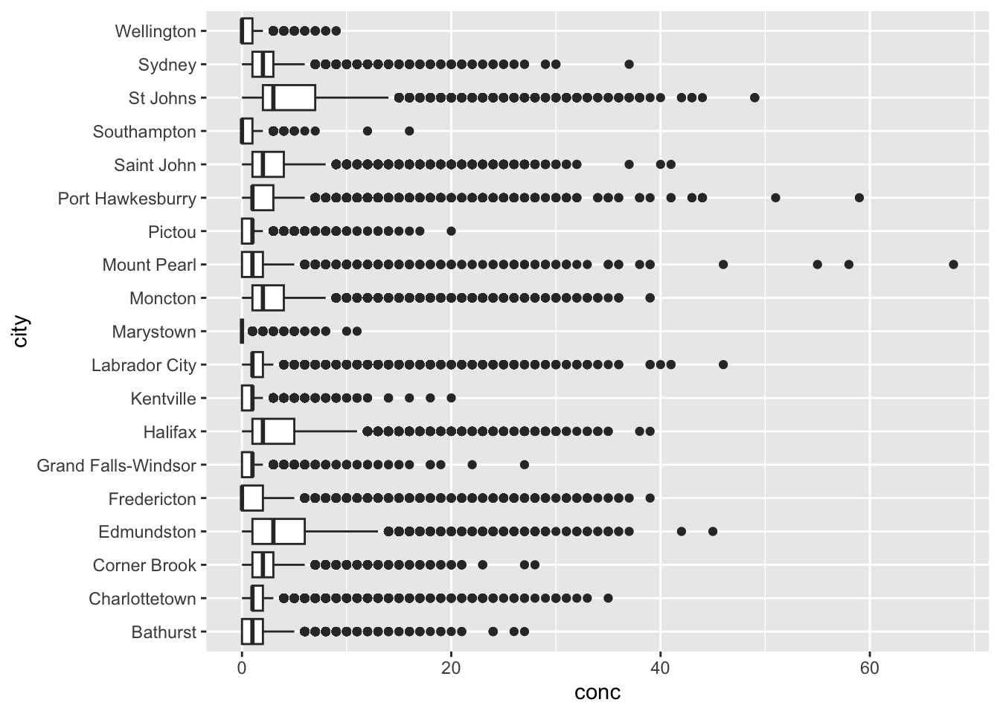
Pretty boring, but it’s gotten the job done. Note that we used coord_flip() to rotate our plot 90\(^\circ\) therefore the supplied x option of city is now plotted on the y-axis. This makes reading long categorical names (i.e. the names of cities) easier. coord_flip() doesn’t change anything else except the final orientation of the plot.
Also note that ggplot() includes geom_col() and geom_bar(). While both can be used to make bar charts. geom_col() is used when you want to represent values in the data (i.e. the precalculated mean as shown above), whereas geom_bar() makes the height of the bar proportional to the number of cases in each group.
15.3.1 Adding error bars
Any measurement always has an associated uncertainty/variability. These values are expressed visually via error bars demarcating the minimum and maximum variability and give a general idea of how precise a measurement is. In our sumAtl dataset we’ve calculated the standard deviation as a measure of uncertainty. In our example, we’ve used the standard deviation (sd) as a measure of uncertainty of our calculated annual means.
To plot error bars we use geom_errorbar() and pass the min and max values we want the error bars to be. In our case, the lowest value would be ymin = mean - sd, and the highest would be ymin = mean + sd. Our plotted error bars now indicated plus or minus one standard deviation from the mean.
ggplot(data = sumAtl, aes(x = city, y = mean)) +
geom_bar(stat = "identity") +
geom_errorbar(aes(ymin = mean - sd,
ymax = mean + sd)) +
coord_flip()
Some of the error bars indicate we could get a negative concentration of NO2. This is physically impossible, but it does suggest we should evaluate the distribution of our data (see below). Note that since we’re calculating error bar ranges on the fly, we’ve had to specify new aesthetic arguments to geom_errorbar().
15.3.2 Ordering bar charts
Often with bar charts (and similar plots), it’s useful to order the bars to help tell a story or convey information. We can effectuate this using fct_reorder():
ggplot(data = sumAtl,
aes(x = fct_reorder(city, mean),
y = mean)) +
geom_bar(stat = "identity") +
geom_errorbar(aes(ymin = mean - sd,
ymax = mean + sd)) +
coord_flip()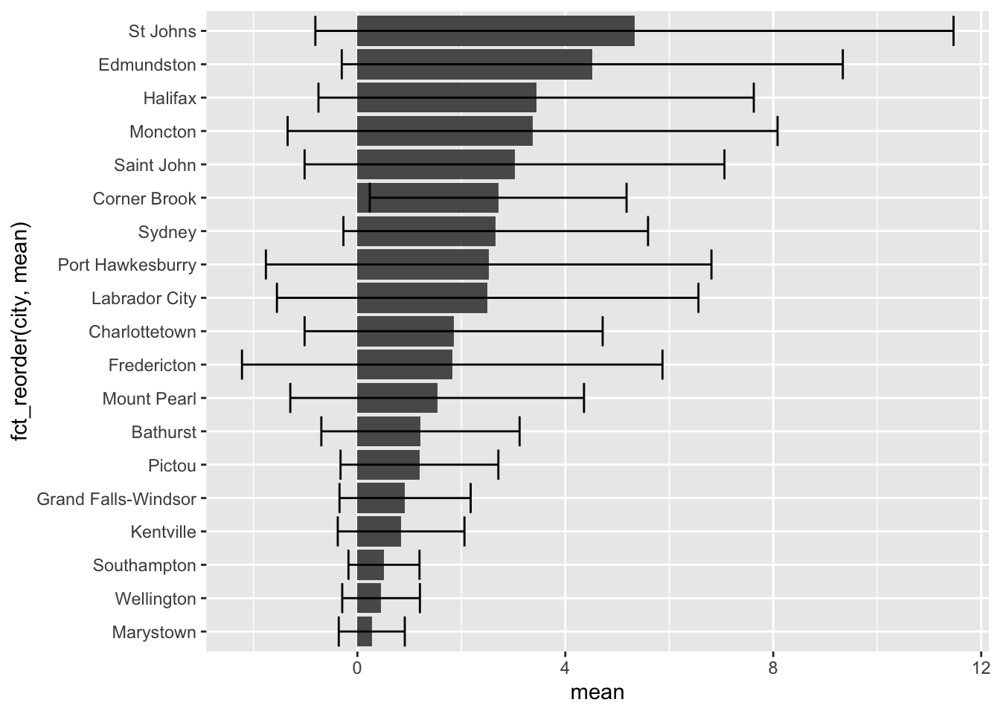
So in our aesthetics call for geom_bar we specified the x variable should be city, but ordered based on their corresponding mean value. Doing this has helped shed some light on trends in NO2 levels. For one, despite Labrador City having lower mean [NO2], we can now easily see that it has a larger variation in [NO2] then Corner Brook.
15.3.3 Grouping bar charts
Sometimes you’ll want to group bar charts as in the concentration of several chemicals in different locations. We can easily group bar charts in ggplot. Let’s go ahead and group our mean annual [NO2] by province by simply (1) reordering based on province, and (2) colour bars based on province:
ggplot(data = sumAtl,
aes(x = fct_reorder(city, p),
y = mean,
fill = p)) +
geom_bar(stat = "identity") +
geom_errorbar(aes(ymin = mean - sd,
ymax = mean + sd)) +
coord_flip()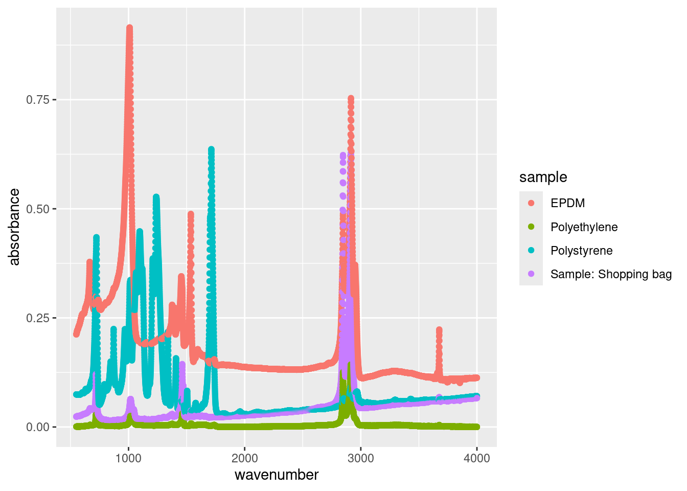
There are other ways to group your bar charts depending on the story you want to tell and the data you have. Please consult the Grouped, stacked and percent stacked barplot in ggplot2 page from the R-graph-gallery.
15.4 Box Plots
Box plots give a summary of the distribution of a numeric variable through their quartiles. You’ve no doubt seen them before, but they’re often misinterpreted. Let’s create a box-plot using geom_boxplot() and our Atlantic hourly NO2 measurements, then we’ll break down how to interpret it.
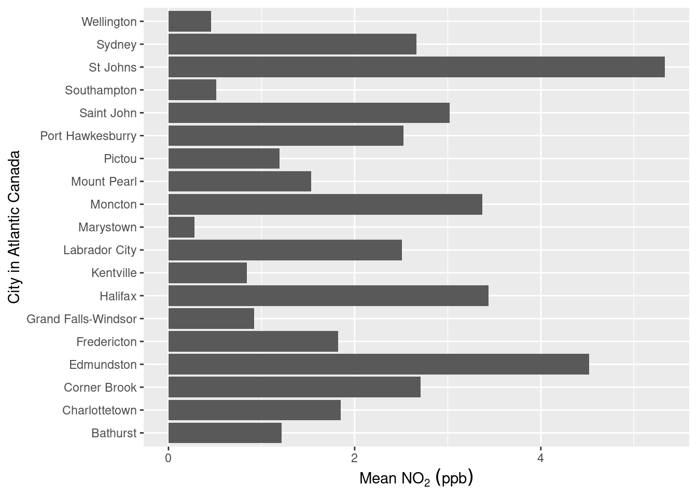
Let’s break down how to interpret one box before tackling the entire set. As previously mentioned, box plots describe data in their quartiles. Quartiles basically arrange the data from the lowest to highest value and split the data at three points:
- The first quartile (Q1) is halfway between the lowest value and the median (50%) of the data. In other words 25% of the data lies below Q1.
- The second quartile (Q2) is the median. 50% of the data lies below, and 50% lies above this point.
- The third quartile (Q3) is halfway between the median and the highest value in the data. In other words, 75% of the data lies below Q3.
The box in box-plots represents the range between Q1 and Q3. This is known as the inter-quartile range (IQR) and 50% of the total data falls somewhere inside this box. You can estimate the distribution by the symmetry of the box. if Q1 to the median is smaller than the median to Q3, the data has a positive skew (right sided skew), and vice versa.
Rounding it out, geom_boxplot() includes whiskers, the thin lines emanating out from the box. This is used the predict outliers and is calculated as \(outliers = \pm 1.5 \times IQR\). Anything outside the whiskers is considered an “outliers” or an extreme point, and is plotted individually.
Putting this all together, let’s look at the [NO2] for St. Johns city:

Note that we’ve plotted the actual distribution of the data. Prior to computers, this was incredibly difficult to do, hence the use of box plots which can be drawn knowing only five points. However, the simplicity in calculating box-plots means they can hide trends and observations of your data. On top of that, they aren’t very intuitive (see the score of text you just read to understand them). Consequently, we strongly recommend you explore some of the Box plot alternatives unless you explicitly need to create box-plots.
15.4.1 Box plot alternatives
The first alternative to box-plots is the violin plot which is made using geom_violin(). It is similar to the box-plot, but instead of displaying the quartiles, it plots the density within each group and is a bit more intuitive then box-plots. While the example below isn’t the most convincing given the scale of the dataset, violin plots are useful for identifying underlying trends in the distribution of data. For example, in the plot below we can see that some towns such as Marystown principle has days where [NO2] = 0 ppb, whereas Grand Falls-Windsor has a large number of days with low, but measurable levels of NO2. This might be because of difference in regional ambient levels of NO2.

Another alternative is to plot the points over top of the box-plot. You’ve encountered this example in R coding basics. Truth be told, there are countless way to visualize distribution.
15.4.2 Statistical comparisons between groups
Often box-plots are used to show differences in distributions between two groups (i.e. population in Location A vs. Location B). How you determine this statistically is a different story, but packages such as ggpubr have many built in functionalists to display the results of these outcomes.
From our NO2 data, St. Johns appears to have the highest levels of NO2. Let’s apply a pairwise test against other Newfoundland communities to see if our observation is statistically significant based upon the results of a Wilcoxon test.
nfld <- atlNO2 %>%
filter(p == "NL") # only nfld stations
# Code from ggpubr website
ggpubr::ggviolin(nfld, x = "city", y = "conc") +
ggpubr::stat_compare_means(ref.group = "St Johns",
method = "wilcox.test",
label = "p.signif") 
Based on the results of our test, all other stations in Newfoundland have statistically significant differences in the median NO2 values. Note the validity of this statistical approach to this particular problem is called into question based on the distribution of the data etc. We’ve included it to demonstrate how to label significance on plots, rather than an explicit discussion on statistics.
For more information on ggpubr, adding p-values and significance labels, and different pairwise statistical test please visit ggpubr: Publication Ready Plots.
15.5 Histograms
Histograms are an approximate representation of the distributions of numerical data. They’re an approximation because you arbitrarily “bin” your data into groups and then count the number of values inside that bin. The frequency, or count, in each bin is represented by the height of a rectangle whose width equals that of the bin. geom_histogram() is used to create histograms:
ggplot(data = subset(atlNO2, city = "St Johns"),
aes(x = conc)) +
geom_histogram() +
labs(subtitle = "Distribution of St. Johns' NO2 levels in 2018")## Warning: In subset.data.frame(atlNO2, city = "St Johns") :
## extra argument 'city' will be disregarded## `stat_bin()` using `bins = 30`. Pick better value with `binwidth`.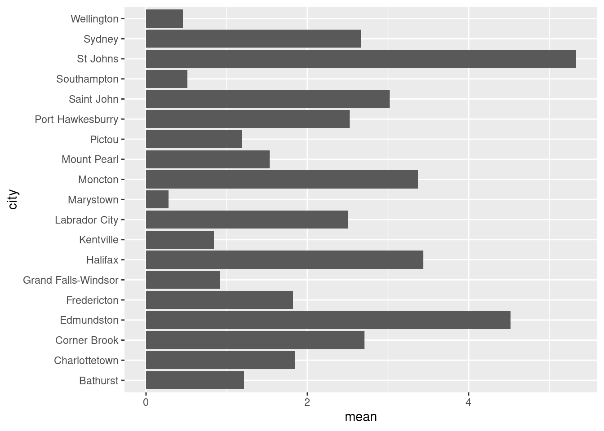
We can alter the resolution of our histogram by modifying the width of the bins using the binwidth argument or by specifying the number of bins with the bins argument. The former is useful when you don’t know the range of your data, whereas the latter is useful is you do (i.e. numbers between 0 and 100).
ggplot(data = subset(atlNO2, city = "St Johns"),
aes(x = conc)) +
geom_histogram(binwidth = 1) +
labs(subtitle = "Distribution of St. Johns' NO2 levels in 2018, binwidth = 1")## Warning: In subset.data.frame(atlNO2, city = "St Johns") :
## extra argument 'city' will be disregarded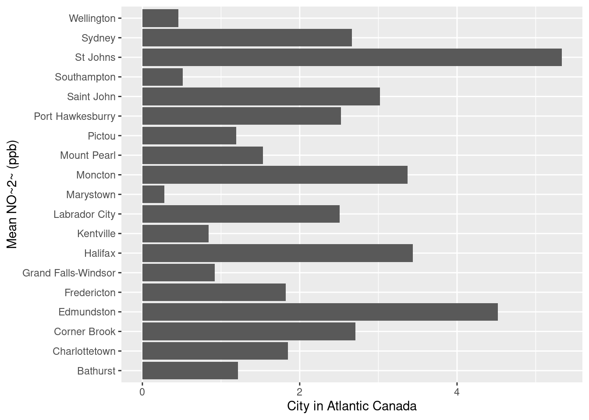
15.5.1 Multiple histograms
While you can overlap histograms, it get’s difficult to read with more than a handful of datasets. If we wanted to plot histograms of all the cities in our dataset we would have to use a small multiple via the facet_grid() or facet_wrap() arguments. facet_grid() allows you to arrange many small plots on a grid defined by variables in your dataset (i.e. columns for provinces, and rows for different pollutants). In the example below we’ve used facet_wrap(~city) which creates a 2D layout of histograms of each cities NO2 values. Note the tilde , ~, preceding in ~city.
ggplot(data = atlNO2,
aes(x = conc, fill = p)) +
geom_histogram(binwidth = 1, position = "identity") +
facet_wrap(~city)
15.6 Scatter plots
Scatter plots display values of two variables, one of which is a continuous variable. Each data point ins plotted as an individual point on.You’ve already made scatter plots in the form of a time series during the Section 1 tutorial exercise. We’ve already touched upon scatter plots during the [Linear Regression] chapter where we also overlaid our linear model over our concentration points. So now we’ll touch upon some things you can do to improve your scatter plots.
15.6.1 Marginal plots
You can easily combine a scatter plot with marginal plot. This is useful to summarize one dimension of our scatter plot. For example, let’s revisit the time series plot we made in R coding basics. We might want to know the distribution of concentrations of the individual pollutants. using the ggExtra package and the ggMarginal() function we can get the following:
## Rows: 507 Columns: 8
## ── Column specification ─────────────────────────────────────────────────────────────────────────────────────────────────
## Delimiter: ","
## chr (3): city, p, pollutant
## dbl (4): naps, latitude, longitude, concentration
## dttm (1): date.time
##
## ℹ Use `spec()` to retrieve the full column specification for this data.
## ℹ Specify the column types or set `show_col_types = FALSE` to quiet this message.# note we're storing our plot in the variable 'torPlot'
# and we're not plotting SO2
torPlot <- ggplot(data = subset(torontoAir, pollutant != "SO2"),
aes(x = date.time,
y = concentration,
colour = pollutant)) +
geom_point() +
theme(legend.position = "bottom")
# We're passing our torPlot to the ggMarginal Function
ggExtra::ggMarginal(torPlot, margins = "y", groupColour = TRUE, groupFill = TRUE)
We can now see the distributions of NO2 and O3 overlaid on the vertical axis. note that ggMarginal() only works with scatter plots.
There are plenty of other marginal options scatted about various packages. You can see many of them in action (with beautiful examples) at Tufte in R by Lukasz Piwek.
15.7 Interactive Plots
Ultimately you’re visualizations will be printed to a static PDF document, but in the interim having an interactive plot can be helpful for data exploration. The plotly package magically makes most ggplots interactive with a simply command. Here’s an example with our Toronto air quality data:
torPlot2 <- ggplot(data = torontoAir,
aes(x = date.time,
y = concentration,
colour = pollutant)) +
geom_line()
plotly::ggplotly(torPlot2)This is also super useful when surveying spectroscopy data, although the large number of points in those datasets can take a while to render into interactive plotly plots.
15.8 Plotting for publication
Up until now we haven’t payed much attention to the explicit aesthetics of plots beyond what we needed for our exploratory analysis. However, many journals, publications, instructors, etc. will want plots to adhere to certain aesthetic standards. There’s scores of options to play with, so we recommend you consult the ggplot2 Cheat Sheet.
15.8.1 Plot Themes
Overall themes can be applied to ggplot. The simple and minimalist theme_classic() is satisfactory for most submissions, but you can peruse the available these in ggplot here or you can explore many more themes in the ggthemes package.
# generating example plot to modify
p <- ggplot(data = torontoAir,
aes(x = date.time,
y = concentration,
colour = pollutant)) +
geom_point()
# default theme
default <- p + labs(subtitle = "Default geom_scatter")
# Classic theme
classic <- p +
theme_classic() +
labs(title = "theme_classic()")
# arranging into grid
gridExtra::grid.arrange(default, classic, ncol = 2)
15.8.2 Legends
You can specify the position of the legend under the theme() option as such:
bottom <- p + theme(legend.position = "bottom")
inside <- p + theme(legend.position = c(.95, .95))
gridExtra::grid.arrange(bottom, inside, ncol = 2)
Other legend positions include: “none”, “left”, “right”, “bottom”, “top”, or a two-element numeric vector to specify the location such as c(0.95, 0.95) for inside the top-right corner. c(0.05, 0.05) would place it inside the bottom right corner, and so on. Also note that legend.position = "none" will remove the legend entirely.
15.8.3 Modifying labels
The labels generated for the plots are derived from the variable names passed along to the ggplot() function. Consequently, variable names that are easy to code become ugly labels on the plot. You can modify labels using the labs() function. Note in the example below that we changed the legend’s title by specifying what aes() option we used to create the legend; in the example below it’s colour.
p + labs(title = "Toronto Air quality",
subtitle = "from Jan 1st to 8th, 2018",
xlab = "Date",
ylab = "Concentration (ppb)",
colour = "Pollutant")
15.8.4 Modifying Axis
We’ve already talked about labelling axis titles in Modifying labels, and adding marginal plots in Scatter plots. So we’ll just briefly touch upon some simple axis modifications.
15.8.4.1 Transforming axix
Transformations are largely related to continuous data, and are done using scale_y_continuous() or scale_x_continuous() functions. For example to scale the y-axis of our plot we’d do the following:

Other useful transformations include “log2” for base-2 logs, “date” for dates, and “hms” for time. The later two are useful if R hasn’t correctly interpreted your dataset. The data type for the data.time column of our dataset was correctly interpreted during our initial importation using read_csv(). Hooray for doing it right the first time.
15.8.4.2 Limits
The limits of plots created with ggplot() are automatically assigned, but you can override these using the lims() function. For example we can specify the limits of our example plot to show from 0 to 100 ppb:

15.8.4.3 Axis ticks/labels
Sometimes when you are plotting, the length of the axis labels is unreadable. This is often the case with categorical data, such as the name of cities like we’ve encountered earlier. We addressed this earlier in [Bar charts] by rotating the plot 90\(^\circ\) with the coord_flip() function. This is often the best solution as it’s how we read English. Another solution is to rotate the axis labels themselves:
basePlot <- ggplot(data = subset(sumAtl, p == "NL"),
aes(x = city,
y = mean)) +
geom_col()
default <- basePlot +
labs(title = "default plot")
flip <- basePlot +
coord_flip() +
labs(title = "coord_flip()")
rotated <- basePlot +
theme(axis.text.x = element_text(angle = 45)) +
labs(title = "element_text(angle = 45)")
rotatedHJust <- basePlot +
theme(axis.text.x = element_text(angle = 45, hjust = 1)) +
labs(title = "element_text(angle = 45, hjust = 1)")
gridExtra::grid.arrange(default, flip, rotated, rotatedHJust, ncol = 2, nrow = 2)
15.8.5 Arranging plots
We talked about how facets can be used to generate multiple plots from a dataset (small multiples), but sometimes you want to combine two or more different plots together. There are a couple of ways, but we’ve been using grid.arrange() from the gridExtra pacakge (as demonstrated above). You can read up on gridExtra here. There is also the ggarrange function from the ggpubr package which, amongst other things, can easily create shared legends between plots.
colchart <- ggplot(data = sumAtl,
aes(x = fct_reorder(city, mean),
y = mean,
fill = p)) +
geom_bar(stat = "identity") +
geom_errorbar(aes(ymin = mean - sd,
ymax = mean + sd)) +
coord_flip()
boxplot <- ggplot(data = atlNO2,
aes( x = city,
y = conc,
fill = p)) +
geom_boxplot() +
coord_flip()
boxplot
ggpubr::ggarrange(colchart,
boxplot,
ncol = 2,
nrow = 1,
labels = c("A", "B"),
common.legend = TRUE,
legend = "bottom")
15.8.6 Anotating plots
Everyplot can do with a bit of annotation. These range from providing critical information for contextualizing and understanding your plot to pointing out something you think the reader might miss but should know. These are different then captions, which is accomplished in the rmarkdown chunk header (see R code chunk options for a refresher).
Let’s quickly plot a map of annual mean 1-hr [NO2] in our dataset so we can visualzie them spatially. Note, the map we’re making here is rather basic, to make prettier maps see CHM410: Air Quality Lab.
# need lat and long value for map
mapNO2 <- atlNO2 %>%
group_by(latitude, longitude, p, city) %>%
summarise(mean = mean(conc))
#install.packages("ggmap")
library(ggmap)
# atlMap <- get_stamenmap(bbox = make_bbox(lon = mapNO2$longitude,
# lat = mapNO2$latitude,
# f = 0.1),
# zoom = 6,
# maptype = "terrain",
# crop = FALSE)
#
# atlMap <- ggmap(atlMap)
#
# atlMapNow we want to plot our annual mean 1-hr [NO2] onto the map. We’ve covered this in detail in Plotting Airbeam data spatially, but for this plot we spefically want to annotate each point with it’s corresponding city location. Doing this manually would take ages, so we’re going to use the ggrepel package. We simply need to specify which column (naps id) we’ll use for our labels:
# atlMap + geom_point(data = mapNO2,
# aes(x=longitude,
# y=latitude,
# colour = mean,
# size = mean),
# alpha = 0.8) +
# scale_alpha(guide = "none") + # removing legend for alpha
# scale_size(guide = "none") + # removing legend for size
# ggrepel::geom_label_repel(data = mapNO2,
# aes(x=longitude,
# y=latitude,
# label = city),
# box.padding = 0.5,
# max.overlaps = Inf)
# Again, not the prettiest map, but that’s up to you to fix in post. geom_text_repel() is an incredibly useful package for quickly annotating plots. If you need to label/annotate points check it out.